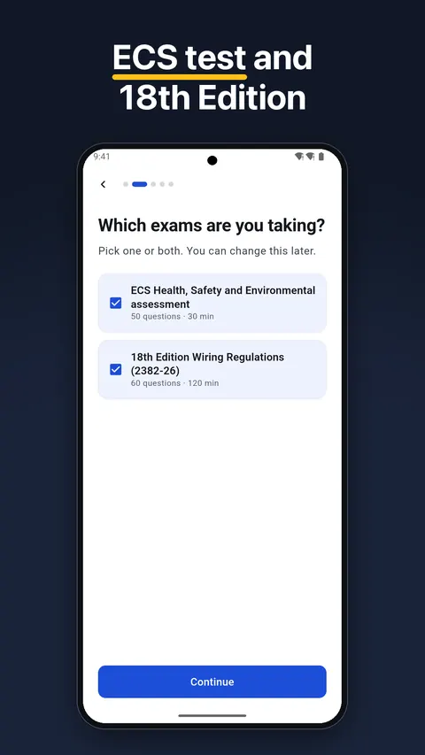

Not a government app. Sparkwise is an independent study app made by Kodfu Bilisim. It is not affiliated with or endorsed by the IET, BSI, City & Guilds, ECS or JIB. It does not contain the real exam questions and never reproduces BS 7671 text.
Health and hygiene: free ECS HS&E practice questions
COSHH, dust, noise, vibration, skin problems, Weil's disease, welfare and fitness for work.
10 original questions from the Sparkwise app, each with the answer and an explanation. Closed book, like the real assessment: answer first, then open the explanation. No sign-up, nothing saved. These are not the real exam questions: no app or website can show you those.
Question 1 · Choose one answer
What does COSHH stand for?
- Control of Substances Hazardous to Health
- Code of Safety for Hazardous Hand tools
- Control of Site Hygiene and Housekeeping
- Construction Operations Safety and Health Handbook
Show the answer
Answer A: Control of Substances Hazardous to Health
COSHH 2002 requires employers to control exposure to hazardous substances.
Source: COSHH 2002
Question 2 · Choose one answer
In COSHH controls, what does LEV stand for?
- Low emission vacuum
- Local exhaust ventilation
- Low exposure ventilation
- Limited exposure value
Show the answer
Answer B: Local exhaust ventilation
LEV captures dust or fumes at the source before they reach the worker's breathing zone. On-tool extraction is a form of LEV.
Source: COSHH 2002
Question 3 · Choose one answer
What does a flame pictogram on a product mean?
- It is flammable
- It is acutely toxic
- It is a biohazard
- It is corrosive
Show the answer
Answer A: It is flammable
Keep flammable products away from heat, sparks and hot work, and store them properly.
Source: GB CLP Regulation hazard pictograms
Question 4 · Choose one answer
What is the safest way to clear up dust after chasing walls?
- Use an M or H class vacuum or wet methods
- Dry sweep it with a stiff brush
- Blow it away with compressed air
- Leave it for the cleaners at the end of day
Show the answer
Answer A: Use an M or H class vacuum or wet methods
Dry sweeping and compressed air put fine dust back into the air you breathe.
Source: HSE: construction dust (CIS36) · COSHH 2002
Question 5 · Choose one answer
Which rule of thumb suggests noise may be around 85 dB(A)?
- You can just hear a radio across the room
- You can hear birds singing outside
- You can talk normally at arm's length
- You must shout to be heard 2 m away
Show the answer
Answer D: You must shout to be heard 2 m away
If raised voices are needed at 2 m, noise is likely to be at a level where hearing protection is needed.
Source: Control of Noise at Work Regulations 2005
Question 6 · Choose one answer
Which of these helps reduce the risk of hand-arm vibration syndrome?
- Using the tool for one long session
- Using blunt bits so the tool cuts slower
- Gripping the tool as tightly as possible
- Using low-vibration tools for less time
Show the answer
Answer D: Using low-vibration tools for less time
Low-vibration tools and less trigger time cut exposure. A tight grip, blunt bits and long sessions all increase the vibration reaching the hands.
Source: Control of Vibration at Work Regulations 2005
Question 7 · Select TWO answers
Which of these help prevent work-related dermatitis? Select TWO.
- Wear suitable gloves for the task
- Wash and dry hands properly and moisturise
- Clean your hands with white spirit
- Leave cement on skin until the end of the day
Show the answer
Answer A: Wear suitable gloves for the task, B: Wash and dry hands properly and moisturise
Gloves stop contact and good hand care keeps the skin's barrier healthy. Solvents and left-on cement damage skin.
Source: HSE: skin at work · COSHH 2002
Question 8 · Choose one answer
How is leptospirosis (Weil's disease) usually caught?
- Being bitten by mosquitoes on site
- Long exposure to loud site noise
- Breathing in silica dust from chasing walls
- Water or soil contaminated by rat urine
Show the answer
Answer D: Water or soil contaminated by rat urine
The bacteria enter through cuts or the eyes, nose and mouth. Damp ducts, drains and chambers are typical places.
Source: HSE: leptospirosis · COSHH 2002
Question 9 · Select TWO answers
Which of these welfare facilities must be provided on a construction site? Select TWO.
- A television in the rest area
- Free hot meals at lunchtime
- Washbasins with warm running water
- A supply of drinking water
Show the answer
Answer C: Washbasins with warm running water, D: A supply of drinking water
CDM 2015 requires toilets, washing facilities, drinking water, changing and rest facilities. Entertainment and meals are not required.
Source: CDM 2015 Schedule 2 (welfare)
Question 10 · Choose one answer
You were drinking late last night and still feel the effects in the morning. What should you do?
- Go in and ask a colleague to keep a close eye on you
- Have a strong coffee and start work as normal
- Do not work until you are fit, and tell your supervisor
- Start work but take an extra break mid-morning
Show the answer
Answer C: Do not work until you are fit, and tell your supervisor
Alcohol can stay in your system the next day and affect judgement and reactions.
Source: HSE: alcohol at work (INDG240)
You’ve seen 10 of 32 questions in this topic
The Sparkwise app has all 32, each with an explanation. Across the whole ECS HS&E there are 389 questions in 11 topics, plus timed 50-question mock exams of 30 minutes.
3 of them are free in the app, the rest come with Pro. Sparkwise Pro is £12.99 one-off and unlocks every question, every mock exam and every worked solution for both exams. No subscription.
Android now; iPhone version not yet available.
Revision notes
COSHH: hazardous substances
The Control of Substances Hazardous to Health Regulations 2002 (COSHH) cover chemicals, fumes, dusts, vapours and biological agents that can harm health. Employers must assess the risks, then prevent exposure or control it adequately: remove the substance, swap it for something safer, enclose the process, use local exhaust ventilation (LEV), and only then rely on PPE. Read the label and safety data sheet before using a product. Asbestos and lead have their own separate regulations.
Hazard pictograms
Hazardous products carry pictograms: a black symbol in a white diamond with a red border. A skull and crossbones means acute toxicity. A corrosion symbol shows liquid eating into a hand and a surface. A flame means flammable. An exclamation mark warns of irritation or less serious harm. A person's outline with a star on the chest means a serious long-term health hazard, such as cancer or asthma. A dead tree and fish means harmful to the environment.
Construction dust
Chasing, drilling and cutting concrete, brick, block and mortar produce respirable crystalline silica. These particles are too fine to see and can cause silicosis, lung cancer and chronic lung disease. Wood dust can cause asthma and nasal cancer. Control dust at source with on-tool extraction connected to a suitable M or H class vacuum, or with water suppression, and wear RPE such as an FFP3 mask as well. Clean up with a suitable vacuum or wet methods; dry sweeping and compressed air spread dust.
Noise
Noise-induced hearing loss is permanent and often starts with ringing in the ears (tinnitus). The Control of Noise at Work Regulations 2005 set a lower exposure action value of 80 dB(A) daily, where employers must assess the risk and offer hearing protection, and an upper value of 85 dB(A), where they must reduce noise and make hearing protection compulsory. Exposure must not exceed 87 dB(A), taking protection into account. As a rule of thumb, if you must shout to be heard 2 m away, noise is probably around 85 dB(A).
Hand-arm vibration
Regular use of hammer drills, breakers, grinders and similar tools can cause hand-arm vibration syndrome (HAVS) and carpal tunnel syndrome. Early signs are tingling, numbness and fingers going white, especially in the cold; damage can become permanent. The Control of Vibration at Work Regulations 2005 set a daily exposure action value of 2.5 m/s² and a limit value of 5 m/s². Use low-vibration tools, keep them maintained with sharp bits, limit trigger time, keep hands warm and dry, and report symptoms early.
Skin: dermatitis and sun
Dermatitis is inflammation of the skin: redness, itching, flaking, cracking and blistering. On site it is often caused by wet cement, solvents, oils, adhesives and frequent wet work. Wet cement can also cause serious chemical burns. Avoid contact, protect your skin with suitable gloves, wash and dry your hands properly and use moisturiser, and check your skin for early signs. Outdoors, too much sun can cause skin cancer: cover up, use high-factor sunscreen and take breaks in the shade.
Weil's disease and other biological hazards
Leptospirosis, including its severe form Weil's disease, is caught from water or soil contaminated by the urine of rats and other animals. Electricians meet it in cable ducts, drains, chambers and damp basements. It enters through cuts or the eyes, nose and mouth. Cover cuts with waterproof dressings, wear gloves, and wash your hands before eating, drinking or smoking. If you get flu-like symptoms, see a doctor and mention possible exposure. Watch for other biological hazards, such as bird droppings and discarded needles.
Welfare on site
Under CDM 2015 every construction site must have suitable welfare facilities from the start: toilets, washing facilities with hot and cold or warm running water, soap and a way of drying hands, drinking water, somewhere to change and store clothing, and a rest area with tables and seating where you can make hot drinks and heat food. Keep them clean and report problems. Wash your hands before eating, drinking or smoking, and never eat in areas where hazardous substances are used.
Fitness for work
Never work under the influence of alcohol or drugs; their effects can last into the next morning and slow your reactions and judgement. Some prescribed or over-the-counter medicines cause drowsiness, so tell your supervisor if you are taking anything that could affect you. Fatigue from long hours or poor sleep also causes accidents. Stress and poor mental health are common in construction; talk to someone, and use your employer's support scheme or a helpline if you are struggling.
More ECS HS&E topics
- Previous: Personal protective equipmentWho provides and looks after PPE, choosing the right head, eye, hand, foot, hearing and breathing protection.
- Next: Fire and emergencyFire triangle, extinguishers, fire stopping and compartmentation, hot work, evacuation, first aid and electric shock.
- ECS HS&E assessment guideFormat, rules, booking and how to prepare
Practise both exams in the Sparkwise app
927 original questions across every Part of BS 7671:2018+A4:2026 and every ECS HS&E syllabus area, timed mock exams in the real format, worked solutions for calculations and explanations that show where to look in the book.
- 18th Edition: 538 questions, 60-question mock exams in 2 hours, a maximum Zs calculator and a guide to Amendment 4
- ECS HS&E: 389 questions and 50-question mock tests in 30 minutes
- Works offline. No ads, no account, no data collected.


Free: two full topics in each exam, three questions in every other topic, one full mock exam for each exam, the maximum Zs calculator and checklists.
Sparkwise Pro, £12.99 one-off: every question, every mock exam and every worked solution, for both exams. No subscription.
Android now; iPhone version not yet available. Sparkwise helps you prepare; it cannot promise a pass.